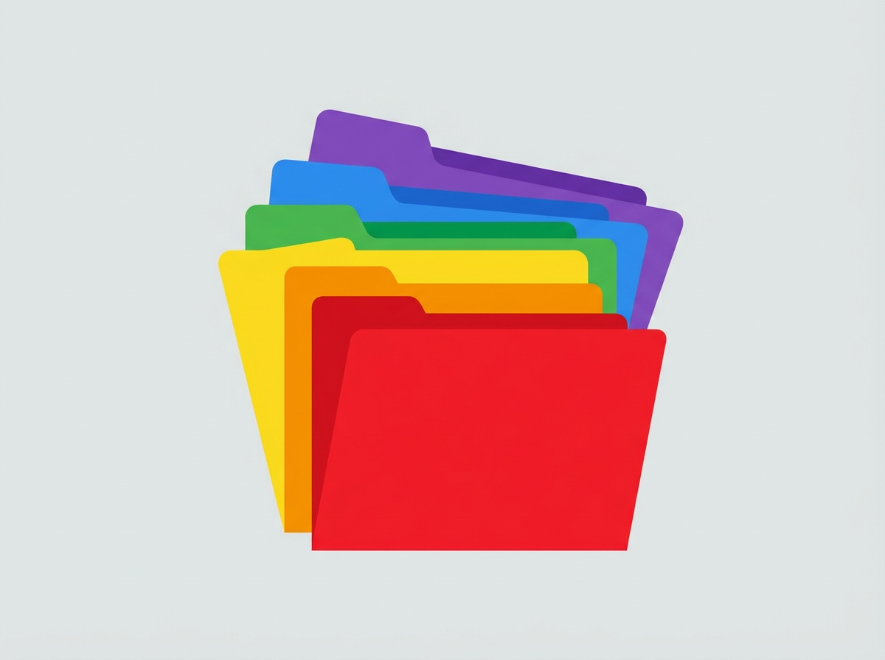
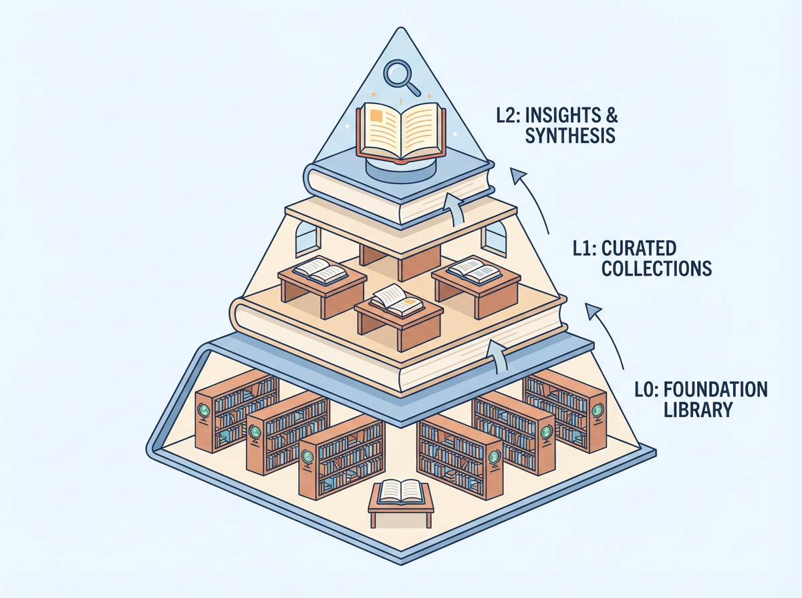
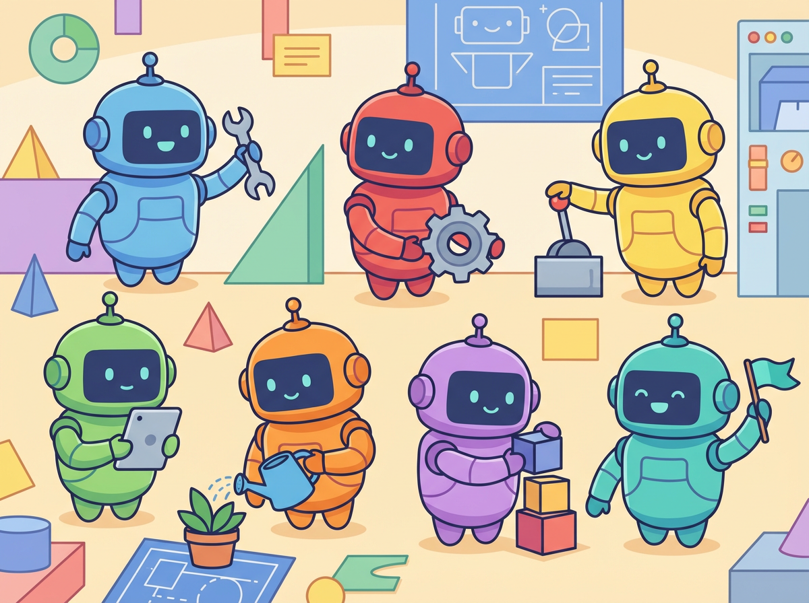

大家好，我是老里。
我跟我的AI助手说了不下20遍"发文章之前先问我发哪个号"。
它每次都说好的好的。
然后下次，又忘了。
有一次写完文章，它直接给我发到了实验室小号。那篇文章应该发主号的。我当时差点把键盘砸了。
还有一次更离谱。我跟它说好了写作风格——短句、口语化、不要AI味。聊了一下午，配合得挺好。
结果第二天开新对话，它又给我写出一篇"在当今数字化时代"开头的文章。
我当时就崩溃了。
你有没有这种感觉？
每次跟AI开新对话，就像跟一个失忆的人重新认识一遍。
你得重新告诉它你是谁、你喜欢什么、上次聊到哪了。
一周下来，光重复交代背景就浪费多少时间和钱？
我算过，我每天至少花15分钟在"重新教AI认识我"这件事上。一周就是将近2小时。
2小时，够我写一篇完整的公众号文章了。
后来我发现了一个东西，叫ePro-Memory。
说白了，就是给OpenClaw装一个"长期记忆"。
你跟它说过的话、踩过的坑、你的偏好习惯，它都能记住。不是存在对话里那种——对话一压缩就没了。是存在一个独立的记忆库里，永远不会丢。
这玩意儿来头还不小，核心算法来自字节跳动的OpenViking，目前最实用的Agent记忆分类体系。
字节团队在大量Agent对话中打磨出来的，不是拍脑袋想的。
记忆不是一锅粥，分类才有意义
很多人听到"AI记忆"第一反应：搞个大数据库，什么都往里塞。
ePro不是这么干的。
它把记忆分成六类：
关于你的四类——个人信息、偏好习惯、相关事物、发生过的事。
关于AI自己的两类——工作经验、通用方法论。
拿我自己的事举例。
我告诉AI"发文章之前先问我发哪个号"——这是偏好习惯。
"上次发错号，应该发主号结果发了实验室"——这是发生过的事。
两条都和发文章有关，但性质完全不同，不该合并。
分类存储，下次AI要发文章的时候，两条记忆同时生效：既记得你的偏好，也记得上次的教训。
不会再犯同样的错。

三层结构，省token省钱
ePro还有个设计我特别喜欢：L0/L1/L2三层结构。
L0是一句话摘要，像书名。
L1是结构化概要，像目录。
L2是完整记录，像全文。
AI工作的时候默认只看L0。觉得相关才翻L1。真正需要细节才读L2。
举个生活中的例子。
就像你去图书馆找书，不会把每本书从头到尾读一遍。你先看书名，感兴趣再看目录，确定要用才读全文。
ePro让AI用同样的方式管理记忆。
省token，省钱，还快。

装了之后，变化是真的明显
现在我有7个AI员工，每个都有自己的记忆。
内容总监记得我的排版偏好——主号和实验室都用Wechat主流风，红棕色标题下划线。
育儿师记得宝宝的成长阶段，不用我每次重新交代。
写作助手记得我的风格——短句、口语化、"大家好我是老里"开头、感恩三连结尾。
我再也不用每次开新对话都重新教它"我是谁"了。
最爽的是，它还会从错误中学习。
上次发错号之后，AI自己把这个教训存进了记忆库。下次发文章的时候，它主动问我："发主号还是实验室？"
我当时愣了一下。它居然记住了。

和其他方案比，ePro赢在哪
OpenClaw社区里已经有好几个记忆方案了。
ClawVault用Markdown文件存记忆，分了17个固定类别，但没有L0/L1/L2分层。
openclaw-memory用SQLite加向量数据库，主打跨Agent共享，但没有分类体系，也没有去重。
Memory Guardian解决的是"防止Agent忘记去查记忆"，但本身没有搜索能力。
ePro和它们的根本差异：结构化经验积累。
六类分类给记忆划了语义边界。L0/L1/L2让检索有层次。分类内去重让记忆库不会越用越臃肿。
这三个能力组合在一起，目前社区里没有第二个方案做到。
关键是，它开源，免费，数据存在本地，不离开你的电脑。
说实话，AI最大的问题不是不够聪明。
现在的大模型，写代码、写文章、做分析，能力都够用了。
但它最大的短板是：不够了解你。
每次对话都是从零开始。你得重新介绍自己，重新交代背景，重新解释偏好。就像每天早上醒来，你的搭档都失忆了。
记忆，才是让AI从"工具"变成"搭档"的那个关键拼图。
装了ePro之后，我的OpenClaw终于不再是金鱼了。它记得我说过的每一句话，踩过的每一个坑，喜欢的每一种风格。
它越用越懂我。这才是AI该有的样子。
以上，既然看到这里了，如果觉得不错，随手点个赞、在看、转发三连吧，如果想第一时间收到推送，也可以给我个星标⭐️～感谢你看我的文章，我们，下次再见。